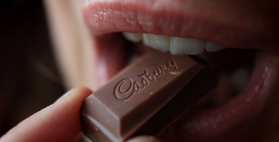

Is chocolate good or bad for health?

Who doesn't love chocolate? Even if it's not your favorite sweet treat, you can probably agree that the confection conjures thoughts of love, pleasure and reward.
But in case you need one more reason (or 10) to celebrate chocolate, just look to science. Studies of chocolate lovers -- and even some self-proclaimed "chocoholics" -- suggest that it could lower blood pressure and reduce the risk of heart disease, help control blood sugar and slash stress, and on and on.
Research has even backed up some of the more bizarre health benefits that have been ascribed to cocoa. The Mayans used chocolate powder to relieve the runs, and in the last decade, researchers have identified possible diarrhea-blocking chemicals in chocolate. But as for prescribing cocoa to combat syphilis sores, Victorian-era doctors probably missed the mark.
"(Chocolate) is a good antioxidant. It has a good effect on inflammation. We think most of the beneficial effects are because of this," said Dr. Owais Khawaja, a cardiology fellow at St. Vincent Mercy Medical Center in Toledo, Ohio. These benefits might include reducing the risk of cancer and dementia, Khawaja said.
However, not all chocolate is created equal. The antioxidant and anti-inflammatory power of chocolate is thought to come from a class of plant nutrients found in cocoa beans called flavonoids. Dark chocolate has more of these than milk chocolate, and white chocolate -- which does not actually contain chocolate -- is not a good source of flavonoids.
Even a chocolate bar that is 70% cocoa, generally considered dark chocolate, can have varying levels of flavonoid compounds, depending on how it was processed. For example, chocolate that has gone through a chemical step known as dutching, also known as Dutch chocolate, has essentially lost all traces of these compounds.
Then there is the milk and sugar. "What we get commercially is not just the pure chocolate. ... I don't think the milk and sugar in milk chocolate would be that good for you," Khawaja said.
That could be bad news for those who hope to harness the power of chocolate when they grab a Hershey's or Snickers bar. Contrary to what the ads said when milk chocolate was introduced in Europe and the United States in the late 1800s, it may not be a nutritious part of our diet.
But we need more research into the effects of consuming all kinds of chocolate, including milk. "There is not enough data as to what form of chocolate is good" and how much chocolate is good, Khawaja said. Studies tend to ask participants about whether they consume chocolate or dark chocolate, but not what kind. To make matters worse, people often forget or misrepresent how much they really eat.
For now, it is probably safe to say that dark chocolate is good -- or at least, not bad. "But until we have more data, don't eat too much. If you're having a serving once or twice a day, fine. But don't start having it six times a day," Khawaja said.
Here's a look at what doctors, rulers and businesspeople have thought of chocolate through the ages.
500 B.C.: 'God food' for everyone
The word "cocoa" comes from "kakawa," which meant "God food" to the Olmec people who lived in what is now Central America between 1500 and 500 B.C. The ancient Mayan people in what is now Mexico apparently agreed. Researchers have detected chemicals from chocolate in Mayan ceramic vessels dating as far back as 600 B.C. Chocolate, which was often consumed as a thick, foamy beverage, probably only increased in popularity over the following centuries. By the time Europeans discovered the Mayans, chocolate was not just for the gods and the rich. Everyone was drinking it.
1500: Chocolate is the original energy drink
The chocolate beverage scored a huge endorsement when Aztec Emperor Montezuma II, who reigned from 1502 to 1520, called it "the divine drink, which builds up resistance and fights fatigue. A cup of this precious drink (cocoa) permits man to walk for a whole day without food."
1577: Got the runs? Take some chocolate
By the 16th century, chocolate was racking up a reputation both in the Americas and in Europe for treating many medical ails, including fever, cough, and stomach and liver problems. In 1577, Spanish explorer Francisco Hernandez wrote about how Mexicans toasted cacao beans and ground them into a medicinal powder that "contained dysentery." Five centuries later, in 2005, researchers found that flavonoid antioxidants in chocolate can block fluid secretion in intestinal cells, at least in the lab, suggesting that cocoa could provide natural diarrheal relief.
1719: Chocolate, it's what's for dinner
In his book "The Natural History of Chocolate," Frenchman D. De Quelus recounted his 15-year-stay in the Americas and concluded that an ounce of chocolate had "as much nourishment as a pound of beef." Perhaps as evidence to his point, he described a woman who could not chew because of a jaw injury and had to subsist on a diet of chocolate dissolved in hot water with sugar and cinnamon. She was "more lively and robust than before (her) accident," De Quelus wrote.
1825: A spoonful of chocolate helps the medicine go down
A French pharmacist by the name of Jean-Antoine Brutus Menier opened a factory that coated less-palatable pills with chocolate. When his sons took over, they dropped the medicinal side and turned it into Menier Chocolate (which was eventually sold to Nestle).
1864: Slather chocolate on your syphilis sores
Chocolate was the most pleasant of the ingredients in a balm given to syphilis patients that also included corrosive materials. Chocolate was also used as an antidote for infections with parasitic worms. For that prescription, it was mixed with sugar, cinnamon, tree oil and an antifungal agent called calomel.
1875: Milk chocolate is born
After nearly a decade of experimentation, Swiss inventor Daniel Peter unveiled the "original" milk chocolate, a combination of cocoa, cocoa butter, condensed milk and sugar. Ads proclaimed the product to be a dietary staple more nutritious than coffee and a luxury that was "as distinct from ordinary eating chocolate as the Alps are from foot-hills." Switzerland had the corner on milk chocolate until Cadbury hit the scene in England in 1904, promising to make "strong men stronger" and generally to be the superlative milk chocolate in terms of nutrition, sustenance and refreshment.
1900: Hershey brings milk chocolate goodness to American soil
Milton S. Hershey made a name for himself in the 1880s by developing a caramel candy so tasty, it killed all competition. By the turn of the century, the famous confectioner had moved on to chocolate. After a reconnaissance mission to Switzerland, the birthplace of milk chocolate, Hershey introduced the 5-cent bar from -- where else? -- Pennsylvania. Similar to its European predecessors, the bar was marketed as a daily dietary requirement that was "more sustaining than meat."
1989: Antidepressant could cure chocoholics
Throughout the 1800s and 1900s, texts piled up describing the everything-under-the-sun medicinal purposes of chocolate. But what if you needed medicine to stop yourself from indulging in chocolate? For the first time in medical literature, doctors reported successfully treating two patients with possible chocolate addiction using the then-new antidepressant bupropion, known as Wellbutrin. One of the patients, a middle-aged woman who also suffered from depression, went from eating 2 pounds of chocolate candy a day to having no interest in chocolate after taking bupropion. (She still had a normal appetite for other foods, though.)
1996: Is chocoholism really an addiction?
Research has concluded what most of us already know: Chocolate is the most craved of all foods. The power of chocolate is probably only boosted by the sweetness and creaminess of most chocolate treats. But could it really be addictive in the same way that drugs and alcohol are? Psychologists argue against this possibility. Although chocolate contains caffeine and substances similar to those found in marijuana, it probably does not contain high enough levels to have long-term effects on brain chemistry.
1998: Chocolate is the ultimate comfort food
Forget pizza and French fries; chocolate may be the ultimate of all comfort foods. A study of 330 adults in the United Kingdom suggests that people tend to crave chocolate when they are feeling down, upset or stressed. Experts speculate that this is because eating chocolate, like all enjoyable foods, gives us a rush of endorphins. These are the same feel-good chemicals that our bodies release when we exercise.
2002: Is chocolate a cancer-fighting food?
Is it too good to be true that chocolate fights cancer? Maybe not, according to some emerging data. An antioxidant found in chocolate called catechin was linked with lower rates of lung cancer in a study of elderly Dutch men. A year later, a study of postmenopausal women in the United States found that those who consumed the highest level of catechin had 45% lower risk of rectal cancer, compared with those who consumed the lowest level. However, the authors of the studies pointed out that other foods and drinks, especially tea, apples and pears, are richer sources of catechin than chocolate, and the lower rates of cancer could have more to do with people consuming them.
2004: Like giving chocolate to a crying baby
Pregnant women might want to give in to their chocolate cravings. Women who report eating chocolate every day during their pregnancy go on to describe their babies as being more active and having a better temperament when they are 6 months old. The researchers who conducted the study suggest that chocolate may help mitigate prenatal stress in moms-to-be.
2005: Dark chocolate may fend off diabetes
It's hard to imagine that chocolate could keep your blood sugar in check, but dark chocolate might have just that effect. In a small study of healthy adults, those who ate half an ounce of dark chocolate a day for 15 days had better insulin sensitivity, and lower blood pressure to boot, than adults who ate a similar amount of white chocolate.
2006: Chocolate is Indians' secret to a healthy heart
Researchers from the United States traveled to a remote island in Panama to solve a medical mystery: Why are the Kuna Indians who live there free from high blood pressure and other medical ailments, even though they eat as much salt as Americans? The likely explanation, researchers found, is that this population consumes a lot of cocoa-containing beverages, about 10 times the amount of the less traditional Kuna living in Panama City. Previous research suggested that antioxidants in the cocoa plant called flavanols could cause blood vessels to dilate, reducing blood pressure.
2006: This is your brain on chocolate
If chocolate is a drug, at least it doesn't seem to have scary effects on your brain like in those 1980s public service announcements. A 2006 study carried out brain imaging of young women and observed increased blood flow to the brain after the women drank a cocoa beverage high in flavanol antioxidants for five days. Studies over the next several years found that young women had faster reaction times after consuming dark chocolate and that older adults performed better on a memory test after drinking high-flavanol cocoa beverages for three months.
2006: Maybe chocolate is not an aphrodisiac after all
The Aztec Emperor Montezuma II is said to have sipped on the "divine drink" of chocolate "before visiting his wives." However, science has not supported a role for chocolate in the bedroom. A study of women in Northern Italy did find that those who reported eating the most chocolate had higher levels of sexual desire and satisfaction. But these women were also younger than the non-chocolate eaters, and researchers concluded that age rather than chocolate consumption probably explained the sexual differences.
2008: Chocolate takes a bite out of inflammation
A study of adults in Italy found that those who ate small to moderate amounts of dark chocolate -- up to 0.3 ounces a day, the equivalent of about one and a half Hershey's Kisses -- had lower levels of C-reactive protein, a marker of inflammation that has been linked to heart disease. But there was a catch. Those who ate more than one-third of an ounce of chocolate a day did not appear to reap any inflammation-lowering benefit.
2010: Chocolate buzz could help chronic fatigue syndrome sufferers
Montezuma II might have been onto something when he deemed chocolate a remedy for fatigue. A small study found that people with severe chronic fatigue syndrome got relief from their symptoms -- and some were even able to return to work -- after consuming chocolate rich in polyphenol antioxidants for eight weeks.
2011: To be addicting or not to be, that is the chocolate question
Ever lament how chocolate is the perfect food, except when you want to stop eating it? Don't worry, science understands. A study implicated both the sugar and the cocoa in chocolate for making adults less able to keep themselves from going back for seconds. Tasting chocolate even triggered feelings of euphoria and well-being in these adults, just as addictive drugs can.
But even though chocolate may trigger loss of control, it is probably not addictive, said Jennifer Nasser, associate professor of nutrition sciences at Drexel University and lead author of the study. For one thing, it takes too long for chemicals from chocolate to enter our bloodstream, she said. However, other researchers say sugar can be addicting and can change brain chemistry in a way that resembles drug addiction.
2012: Chocolate could save your skin
Chocolate could team up with beverages such as coffee, tea and cola to drive down your risk of skin cancer. A study of more than 120,000 nurses in the United States revealed that women and men who guzzled the highest amount of these beverages and ate the most chocolate had an 18% and 13% lower risk of developing skin cancer, respectively, presumably because of the caffeine they contain. But the caffeine in a serving of chocolate is piddly compared with that in a cup of coffee: 7 milligrams vs. 137 milligrams.
2015: Is chocolate good for your heart? Let us count the ways.
The blood pressure-lowering power of chocolate could be just the beginning. Researchers uncovered other heart benefits in a large analysis of more than 150,000 men and women in the United States, Europe and Australia who reported eating up to 3.5 ounces of chocolate a day. Chocolate consumption was associated with a 21% lower risk of stroke, a 29% lower risk of developing heart disease and a 45% lower risk of dying of heart disease.
Even better news for some, the study found that consuming milk chocolate, often regarded as less healthy than dark chocolate, was also associated with lower risk of heart disease. The authors speculate that ingredients such as calcium in milk chocolate may contribute to this beneficial effect.
Although the authors say the benefits they observed could be due to other foods in the participants' diets, they do at least take the findings to mean that there "does not appear to be any evidence to say that chocolate should be avoided in those who are concerned about cardiovascular risk."
2017: Heart flutter study reminds us why chocolate can be complicated
Investigations into whether chocolate could have any other ties to the heart were taken a step further in May.
A study published in the journal Heart, part of the BMJ group, suggested that moderate consumption of chocolate might be tied to a lower risk of atrial fibrillation, the most common type of irregular heartbeat.
Yet the controversial study came with some serious limitations, and it pinpointed only an association, not a casual relationship.
The study was based on 55,502 adults in Denmark and included self-reported data on how much chocolate each person ate, on average. A serving of chocolate was defined in the study as 1 ounce.
The adults were separated into five groups: those who consumed less than one serving a month; one to three servings a month; one serving a week; two to six servings a week; and one serving or more a day.
Compared with those who said that they ate less than one serving a month on average, the rate of atrial fibrillation was lower for all other groups, the researchers found.
Among women, the strongest inverse association between chocolate and atrial fibrillation was among those who said that they had one serving of chocolate a week, the researchers found. Among men, the strongest was among those who said they had two to six servings a week.
However, the study found only a correlation between a chocolatey diet and heart flutters, not a cause-and-effect relationship. Because of this, even the researchers noted in the study that there's no way to rule out that something other than chocolate could be driving the study findings.
For instance, there was a smaller percentage of diabetes cases among the study subjects who said they ate more chocolate on average. People with certain chronic conditions, including diabetes, have an increased risk of atrial fibrillation, according to the Mayo Clinic.
"The chocolate consumers were healthier as they had less hypertension, less diabetes, and lower blood pressure. The chocolate consumers also had higher levels of education," wrote Duke University Medical Center's Drs. Jonathan Piccini and Sean Pokorney in an editorial that accompanied the new study.
"Moreover, although the study characterized education level, other socioeconomic factors, such as income, were not accounted for," they wrote. "Regardless of the limitations of the Danish chocolate study, the findings are interesting and warrant further consideration."
Subscribe to our newsletter for free